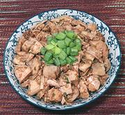

|
Fish-Fragrant Cold ChickenChina - Sichuan - yuxiang jisi | ||||
| Makes: Effort: Sched: DoAhead: |
1-1/4 # ** 30 min Yes |
No, it doesn't smell or taste like fish - just the dressing is similar to dressings used on fish. This one can serve as an cold appetizer, or as a cold chicken salad. See Comments. | |||
|
1 ------ 1 2 1/2 4 2 1 2 1 2 1 1/3 ----- |
# ---- T T in cl t t T T t --- |
Chicken, cooked (1) -- Dressing Sambal Oelek (2) Oil Ginger Root Garlic Scallion greens Sugar Black Vinegar (3) Soy Sauce Chicken Broth (4) Sesame Oil, dark Salt ----------------- |
This is a fairly substantial and distinctly flavorful dish, so it could stretch to even 5 for salad. As an appetizer, 6 to 12 depending on how you serve it. Do Ahead:
|